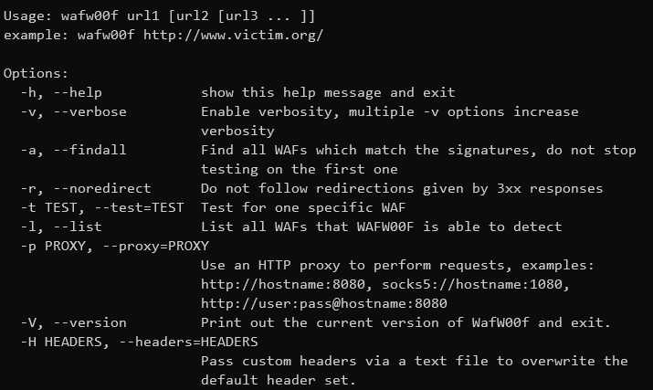

#Waf Detect (When Found Waf Recommended to Find Other Site in SubDomain)
nmap -p80 --script http-waf-detect <host>
nmap --script=http-waf-fingerprint <targets>
wafw00f --findall https://www.mydomain.com
